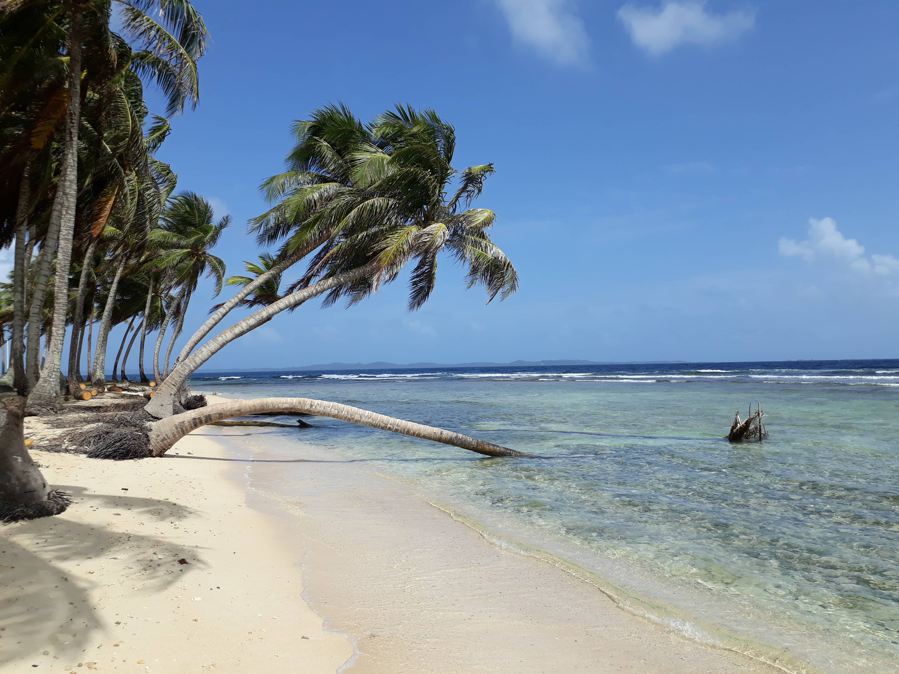
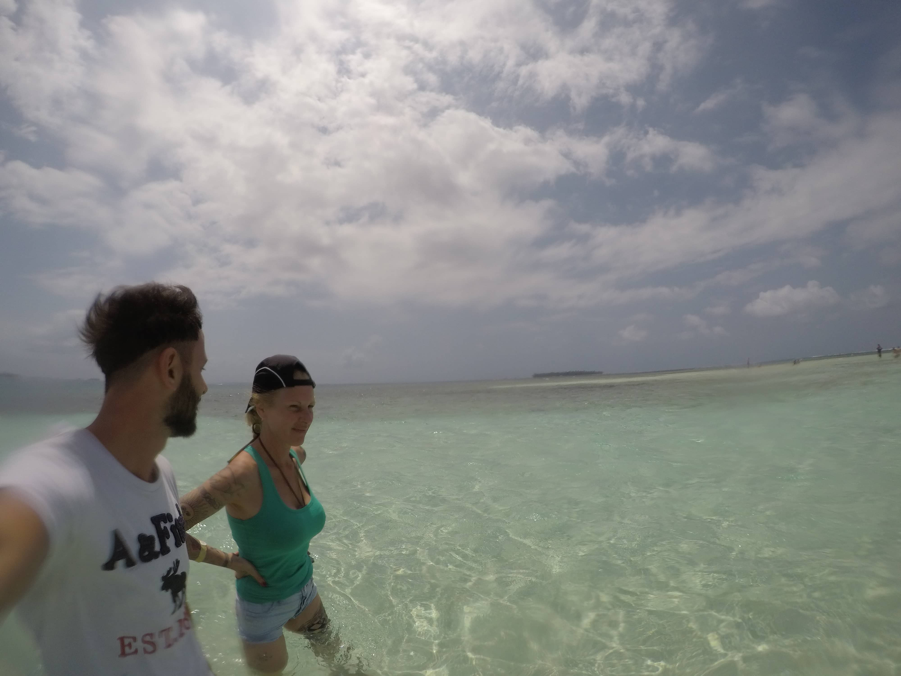
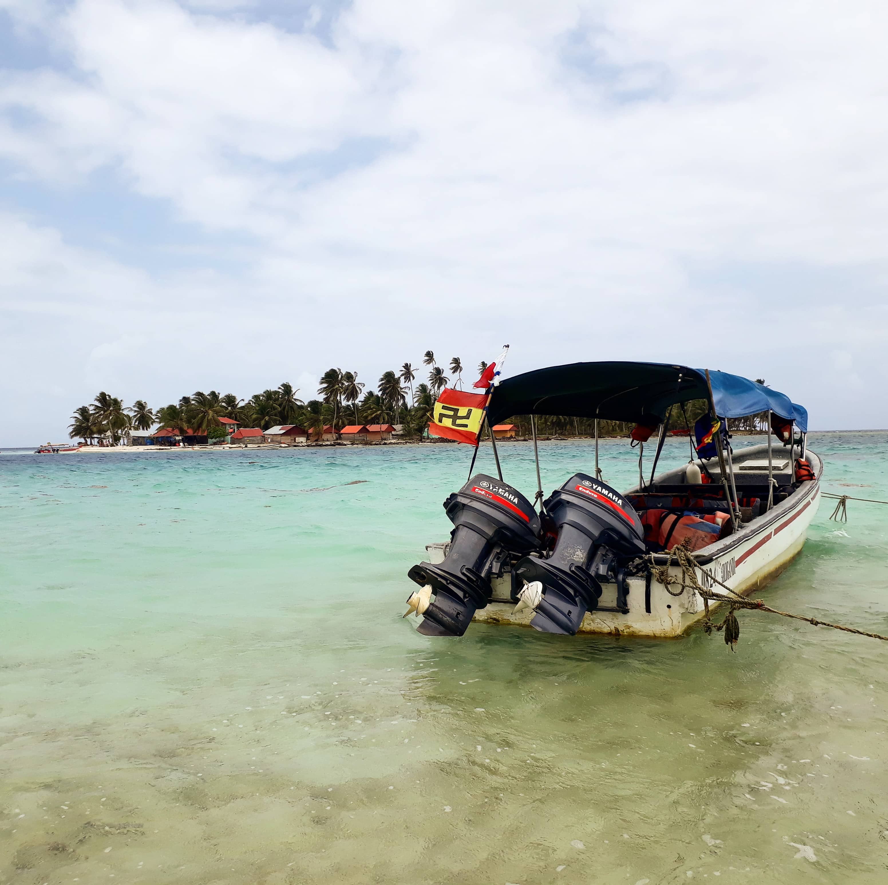
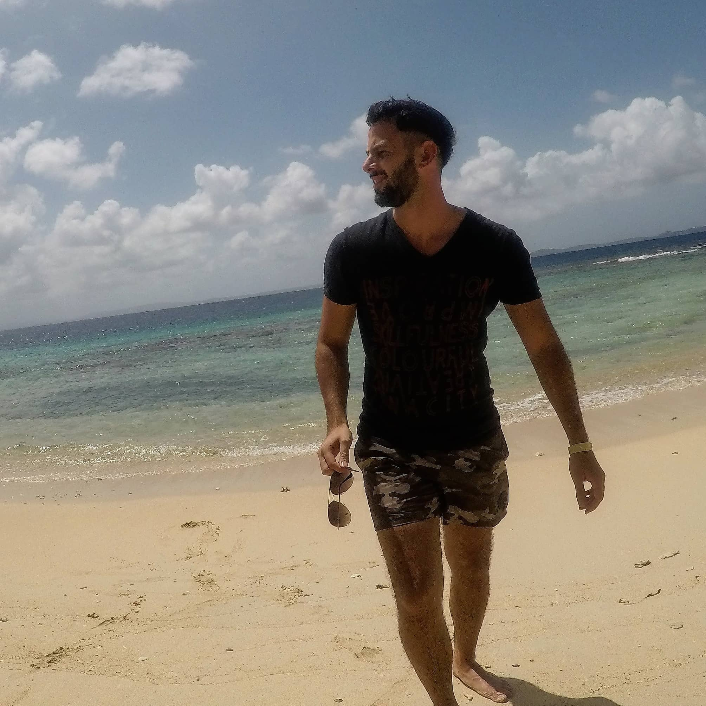
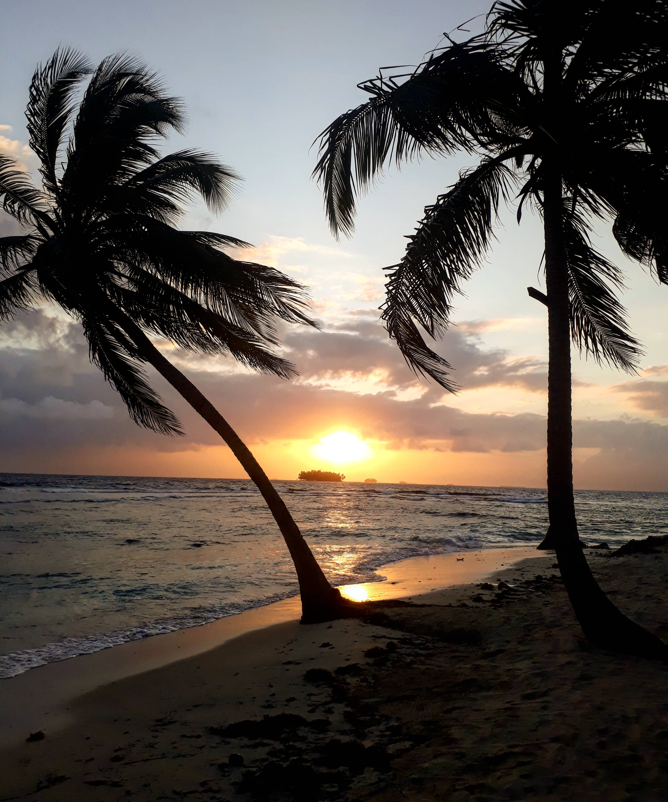
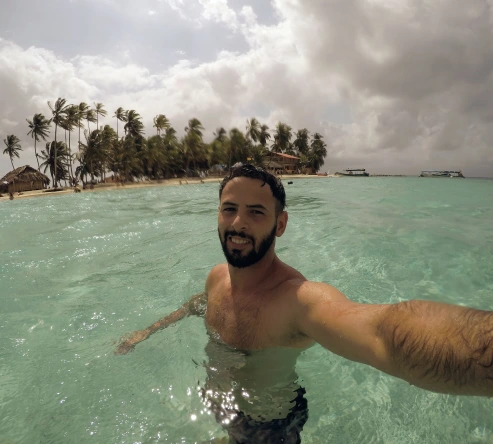

¿San Blas, Kuna Yala o Guna Yala?
Isla Aguja, Guna Yala, Panamá.
El título parece una broma pero no, estas islas, pertenecientes a una comarca indígena de la comunidad Guna, mudaron de nombre tres veces. Hasta 1998 se llamaron San Blas, nombre con el que se conoce en el resto del mundo. En 2008 pasaron a llamarse Kuna Yala y desde 2011 se denomina Guna Yala, debido a que la pronunciación de la letra "K" no existe en la lengua materna de este pueblo. Esta comunidad es impresionante, sus creencias, su cultura y al tener las puertas abiertas, nos permite a los turistas disfrutar de una inmersión cultural increíble en una de las tierras costeras con el mar más hermoso que se puede encontrar en Panamá. Lo mejor, sin hoteles ni macro-agencias de turismo que poco entienden del cuidado de la naturaleza y del respeto a las culturas milenarias.
A diferencia de otros destinos paradisíacos, Guna Yala no tiene resorts, no tiene quioscos y las cabañas o los campamentos donde quedarse son muy humildes. Eso sí, cien por ciento en ambientes naturales y en un contexto cultural que nos permite conocer verdaderamente Panamá.
Una nueva versión
Algo que nos regalan los viajes es poder encontrarnos con nuevas versiones de nosotros mismos respondiendo ante situaciones totalmente nuevas, pero esta vez, la que se encontraba ante nuevas situaciones era mi madre. Ella es bien estructurada, le tiene pánico al agua, no bebe casi alcohol, le gustan los hogares limpios y ordenados y es excesivamente responsable y perfeccionista. Todos atributos que son muy útiles en la mayoría de los contextos salvo para cuando hay que disfrutar.
Mi madre y yo en la piscina natural.
Con todos esos antecedentes fue que nos encontrábamos en una camionetita de la empresa Go2SanBlas, que nos pasó a buscar por la casa de mi madre en Panamá Ciudad, dirigiéndonos a la barca que nos llevaría a Guna Yala. El viaje en auto demora aproximadamente unas 2:30 horas y el barco hasta la isla entre 15 y 30 minutos dependiendo del estado del mar. Generalmente yo no optó por agencias de turismo, pero esta vez la organización estuvo a cargo de mi madre y la verdad que salió todo espectacular.
Un poco cansados y bastante ansiosos llegamos al embarcadero. A penas bajamos de la camionetita no me pude contener y eche una rápida mirada al mar, el caribe estaba ahí, pero para mi sorpresa, estaba muy distinto a como yo lo recordaba. El agua era verde y muy turbia y les confieso, que la decepción fue grandísima. Sin embargo, había problemas más importantes que debía atender, mi madre tenía pánico de subir a la barca, pero predispuesta a dejarlo todo por vencer su miedo. Entre tambaleo y tambaleo conseguimos subirnos. Lo primero que ella hizo fue abrazarse al salvavidas, casi que le faltaba rezar nada más. La pequeña embarcación encendió sus motores y suavemente empezamos a movernos ¡Mi madre no podía más! Se agarraba fuerte a la baranda y a mi. Mientras dejábamos atrás la costa el barco empezó a acelerar, la cara de mi vieja decía hablaba por si sola, pero sorprendentemente, después de unos cuantos saltos de esos que te hacen sentir el vértigo en la piel, la cara de ella había mudado, lo estaba disfrutando, y se reía de una situación que claramente no podía controlar. Sin darse cuenta me estaba regalando el mejor ejemplo de como afrontar los miedos.
Pequeña lancha con una de las banderas de la comunidad Guna que tiene total similitud con la esvástica. Sin embargo, los locales explican que representa la lucha de la comunidad en 1925 cuando se revelaron contra la policía panameña.
Solucionado lo de mi madre, mi mente volvió a la imagen del agua verde turbia y a imaginar que donde estábamos yendo no era lo que esperábamos. Mi pensamiento se diluyó cuando el barco se encontraba a metros de la Isla Aguja, mis ojos se abrieron de para en par y quede atónito al darme cuenta que me encontraba ante una de las aguas más transparentes que había visto en mi vida. "Bienvenido al Caribe" pensé.
Isla Aguja, la perla del Caribe panameño
Era el mediodía y habíamos llegado a una isla que era apenas más grande que una manzana, rodeada de un mar transparente, casi perfecto y sumergidos en la cultura Guna que le agregaba el condimento perfecto a nuestras vacaciones. Sin embargo, llegó la hora de ir a la cabaña y ahí estaba otra vez el problema, mejor dicho por lo que yo me hacia problema, había leído como eran los hospedajes en la isla y sabía que mi madre no iba a gustar de ellos y que probablemente le iba a costar horrores pasar la noche.
Entramos a la cabaña, modesta pero linda, dejamos rápidamente las cosas y ella se sorprendió un poco con la suciedad del lugar pero no dijo absolutamente nada. Lo siguiente: Fuimos a recorrer la Isla y disfrutar del Mar Caribe. En escasos minutos le dimos varias vueltas a la isla y nos sacamos unas mil y una foto, después me dedique a nadar y ella se animó a entrar al agua hasta la cintura, algo que no hacia desde hace mucho tiempo.
Isla Aguja, Guna Yala, Panamá.
El día continuo increíble, es bastante difícil estar mal en un paraíso así. En las horas que siguieron, disfrutamos de la arena, del mar y comimos una exquisita comida local (incluida en la estadía) en el pequeño restaurante de la isla. Sin embargo, el momento cúlmine llegó cuando el sol estaba cediendo y me encontraba leyendo tranquilo, revoloteando con los pies la arena y con la certeza que la mayoría de las personas que habían pasado el día en la isla ya no estaban. Solamente había unos pocos que se quedaban a dormir y sentí que la isla, casi desierta, era toda para mi.
Volví a la cabaña para bañarme y mi madre me sorprendió con la pregunta "¿Abro las cervecitas?" ¿Cómo? Pensé, mi vieja no toma. Así fue que otra vez me di cuenta que ella estaba cambiada, en otra versión y hasta más descontracturada. Fue así que nos sentamos en la entrada de la cabaña, que daba al mar, y nos dispusimos a disfrutar las cervecitas. Mientras escuchábamos el mar y recibíamos el vientito que venía del océano, tuvimos una de las charlas más lindas con mi madre, donde hablamos absolutamente de todo y nos encontramos como hacia años no nos encontrábamos. Después de ese hermoso momento, cenamos y para mi sorpresa, casi que nos desmayamos en las camas. Los ruidos de los insectos o los miedos de mi vieja no fueron ningún tipo de problema.
Amanecer en Isla Agujar, Guna Yala, Panamá.
Al día siguiente, amanecí exaltado, como siempre que despierto en una playa. Con mucho cuidado para que mi madre no despierte, me vestí y salí a recibir al sol que se estaba asomando. El clima era ideal y decidí irme a caminar por la isla mientras veía amanecer. ¡Qué placer! Estar en un paraíso de playa observando al sol nacer y no ver a ninguna persona despierta deambulando. Sentí nuevamente que el mar era mío y aproveche para darme un baño en las aguas calentitas. Era todo tan perfecto que ni siquiera mi Go Pro podía capturar el momento, saque muchísimas fotos y ninguna pudo representar lo que estaba viviendo.
Isla Perro Chico, piscina natural e Isla Fragata
Nuestra estadía en Isla Aguja había terminado pero todavía nos quedaba una excursión que nos llevaría a conocer otros tres lugares que prometían ser increíbles. Lo cierto es que todas las islas comparten un mismo concepto de playa "caribeña", aguas extremadamente cristalinas y cálidas. Las diferencias suelen estar en el tipo de hospedaje disponible, en algunas hay cabañas, en otras campamentos, pero si vamos solamente al pasar el día la mayoría de las islas son perfectas.
Isla Perro Chico

Isla Perro Chico, Guna Yala, Panamá.
Nuestra estadía en Isla Aguja había terminado pero todavía nos quedaba una excursión que nos llevaría a conocer otros tres lugares que prometían ser increíbles. Lo cierto es que todas las islas comparten un mismo concepto de playa "caribeña", aguas extremadamente cristalinas y cálidas. Las diferencias suelen estar en el tipo de hospedaje disponible, en algunas hay cabañas, en otras campamentos, pero si vamos solamente al pasar el día la mayoría de las islas son perfectas.
Piscina natural
El segundo punto fue un banco de arena en el medio del mar. La sensación de estar parado en un sitio con el agua hasta la cintura y ver que alrededor es todo mar es inexplicable. Sin dudas, una de las mejores visitas que realicé en Panamá, hasta me hizo recordar muchísimo a las famosas Islas Maldivas.
Isla Fragata
Es una isla con un formato un poco particular, ya que es muy estrecha. La principal característica es que tiene una mini feria de artesanías Guna donde se pueden llevar algunos regalos por buen precio. En cuanto al resto, la isla esta un poco más descuidada qué las demás.
Perro Chico, Guna Yala, Panamá.
En definitiva, mi visita a Guna Yala fue un viaje atípico, fue desprenderse de todo el confort que solía tener en la ciudad para reencontrarme con el mar y sobre todo con mi madre.